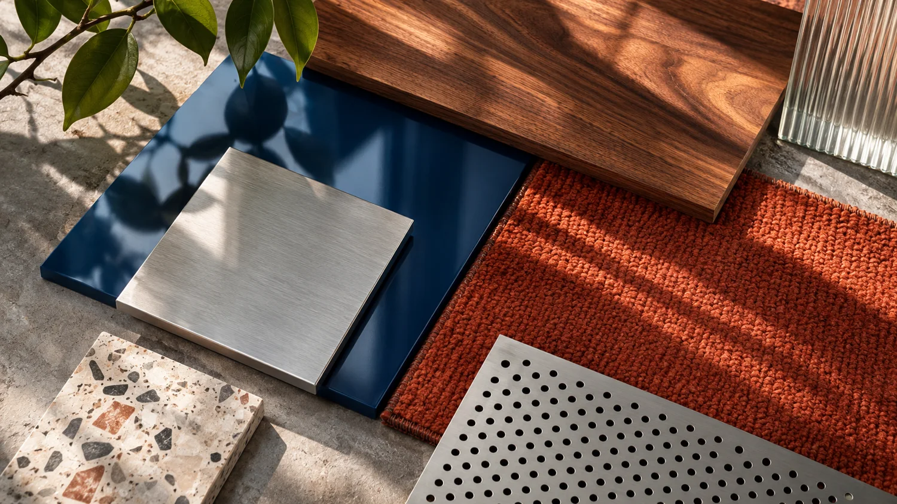

Understand people and activities
Explore headcount, working patterns, visitors, privacy, accessibility and the mix of work settings.

Design and planning
Map how people use the office, then test layouts against the building and budget.
Discuss your project
Workplace thinking / Design development
We explore the relationships between reception, workstations, enclosed rooms and circulation, then test the details that make the layout buildable: floor build-ups, ceiling zones, partitions, door openings and service routes.
Capacity is a starting point. Desk count must leave enough room for people, doors, service access and amenities.
Good layouts are coordinated. Review acoustic separation, lighting, HVAC, furniture and power together.
Build a space briefHow we can help
Explore headcount, working patterns, visitors, privacy, accessibility and the mix of work settings.
Plan circulation, meeting rooms, focus spaces, breakout areas and front-of-house relationships.
Bring building services, lighting, acoustics, AV, IT and furniture into the design process.
Compare finishes and products for suitability, cost, durability and maintenance.
A practical starting point
Start a conversation
A brief outline of the location, floor area and programme is enough to begin.
Get in touchPROJECT NOTE
Balance collaboration with concentration, acoustic privacy, accessibility, storage and reliable meeting technology. A compelling image alone is not a workplace brief.